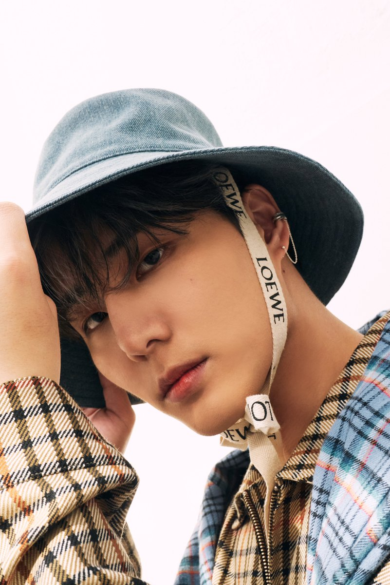

I Loved You
lyrics by Young K
난 너를 원망해
또 너와의 시간을 미워해
너를 잃어버린 난 모든 게 무의미해 그리워하지 않아 난 네가 보고 싶은 게 아냐 난 내게 쥐여준 너의 사랑 (You) 기억해내고 싶지 않아 Oh Really I loved you 너무 사랑했으니까 그런 거야 잊고 싶어도 잊지 못하니까 그래서 널 잊고 싶은 거야 진심으로 I loved you 널 사랑했던 만큼 더 힘든 거야 미워하고 싶어도 하지 못할 너라서 더 미운 거야 알아 지금 내 말이 정말 바보 같아 보인단 거 말도 안 되는 거 I know I know 네가 날 떠나가 버린 그 순간부터 내 세상은 이미 멈춰버린 걸 끝나버린 걸 Oh Really I loved you 너무 사랑했으니까 그런 거야 잊고 싶어도 잊지 못하니까 그래서 널 잊고 싶은 거야 진심으로 I loved you 널 사랑했던 만큼 더 힘든 거야 미워하고 싶어도 하지 못할 너라서 더 미운 거야 사실은 내가 아무리 너를 지워보려 해도 못한다는 걸 알아 yeah 사실은 네가 나에게 있어 잊혀지지 않을 사람이란 걸 말야 Loved you 잊고 싶어도 잊지 못하니까 그래서 널 잊고 싶은 거야 진심으로 I loved you 널 사랑했던 만큼 더 힘든 거야 미워하고 싶어도 하지 못할 너라서 더 미운 거야